Chapter 5 Results
5.1 General Results
Based on the average income map, the pattern of the whole U.S. average income distribution geographically is observable. The range defined is from 20,000 dollars to 55,000 dollars per person every year. The regions with relatively high average income are located in northeastern America, and always concentrated on several adjacent states. 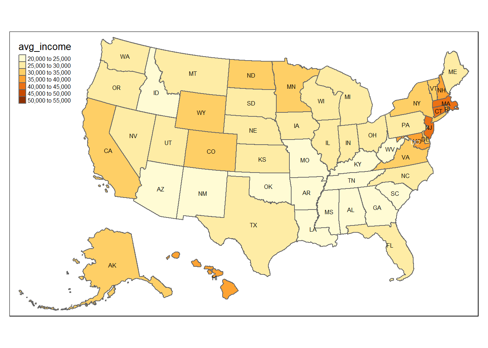
We explore the population with low education level measured using the rate of people above 25 years old who have not finished their high school education as the index. The map plot shows the percentage of people above 25 without high school diploma is larger in the south of America than which in the north of America. There is a proper guess that the family education are more popular and developed in wealthy states rather than school education. 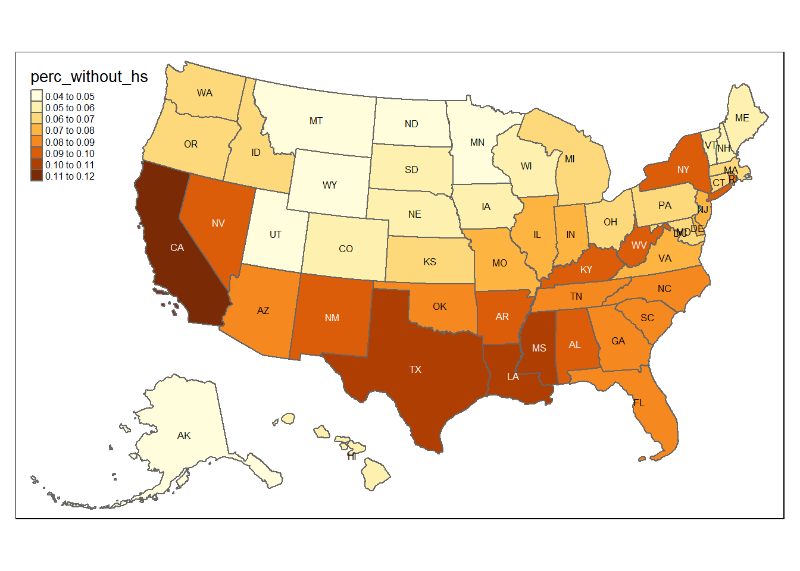
To quantitatively describe the average income and education level, two dimensional scatter plot presents the association between them. There is a obvious negative association between them, which means when education level of people is lower, the income they earn would be lower. 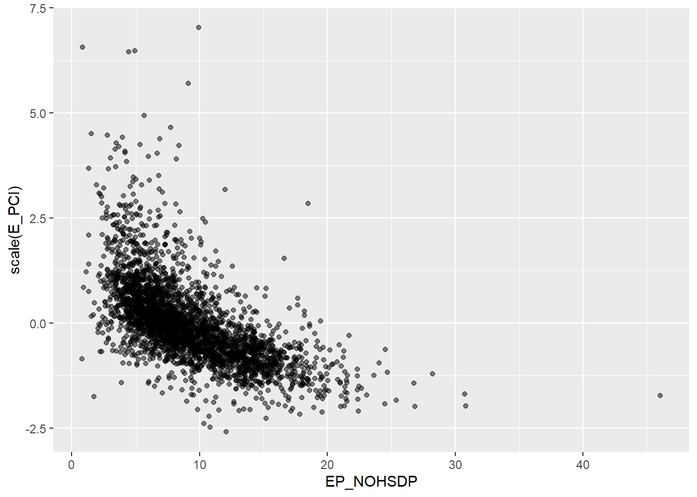
The COVID-19 vaccination coverage rates are always greater than 0.5, and there are apparent geographic correlation and distinction. More specifically, vaccination coverage rates are extra high in the northeastern and adjacent states, while people do not show a such strong willing to accept the vaccine. Moreover, the distribution of the vaccination rates are positive related to the distribution of average income above. 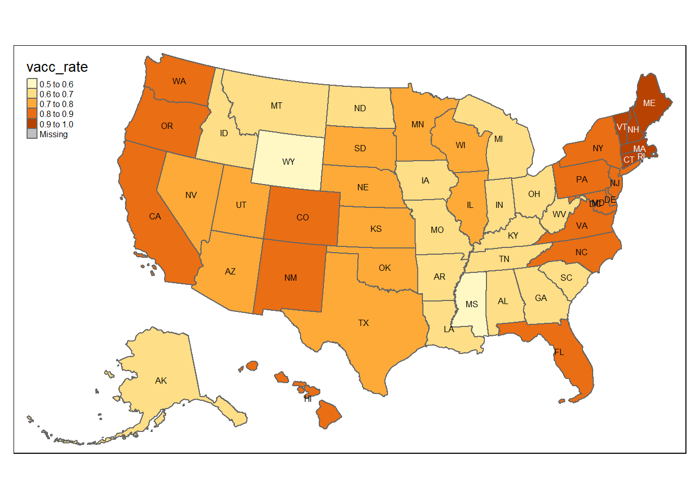
## # A tibble: 6 x 7
## STATE perc_without_hs avg_income `percent of white vac~` `percent of bl~`
## <chr> <dbl> <dbl> <chr> <chr>
## 1 Alabama 0.097 23073. 0.49 0.51
## 2 Alaska 0.047 32531. 0.56 0.61
## 3 Arizona 0.088 23459. 0.6 0.51
## 4 Arkansas 0.092 22443. <NA> <NA>
## 5 California 0.114 32090. 0.75 0.66
## 6 Colorado 0.058 30695. 0.78 0.73
## # ... with 2 more variables: `percent of Hispanic vaccinted` <chr>,
## # `percent of Asian vaccinted` <chr>In order to learn about the death rate in COVID-19 pandemic among total 4 U.S. Census Regions, facet plot shows the relationship between death rate, poverty rate and education level. A positive correlation between death rate and poverty rate shown in the South and West Census Region, while Middle and North Census Region has no apparent trend. In addition, all the plots suggest a positive association between education level and death rate. 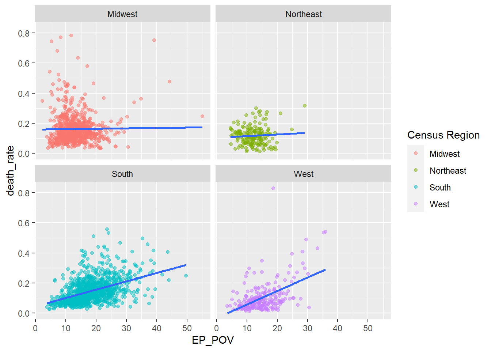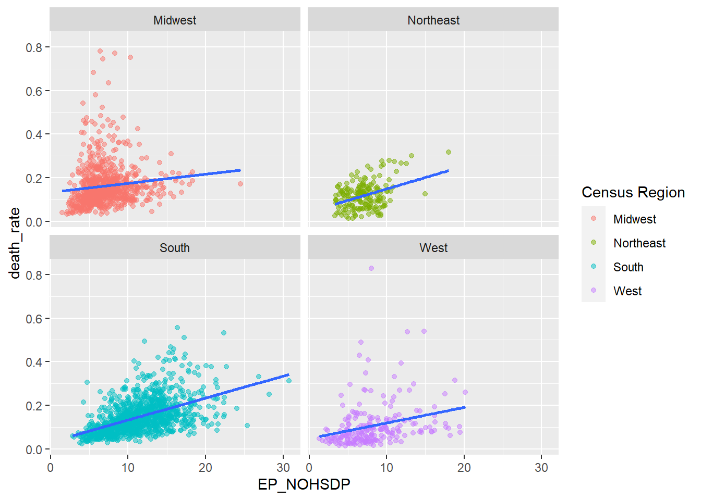
5.2 Case Study: 2021 COVID-19 Vaccine Attitudes among People Experiencing Homelessness in Los Angeles, CA
In this section, we would specifically pay attention to the attitudes toward COVID-19 among the homelessness in Los Angeles and deal with the demographic data and binary response collected from a related survey. The observable relationship will be presented and concluded below with the statistical graphics.
Based on the following mosaic plots, it is observable that females are more likely to be anxious about getting COVID-19 than males. People who are doubled up and live in hotels are less worried about COVID-19 than those who are sheltered or unsheltered.
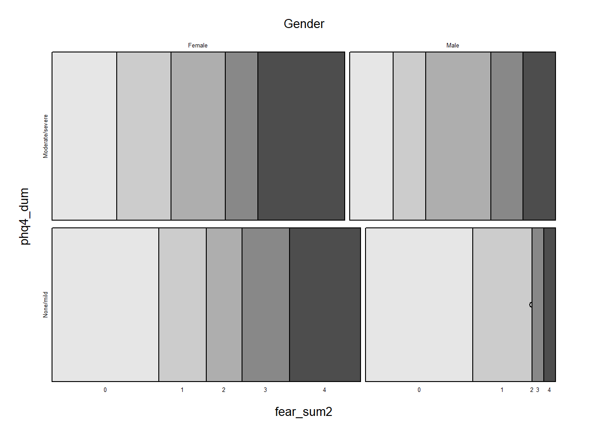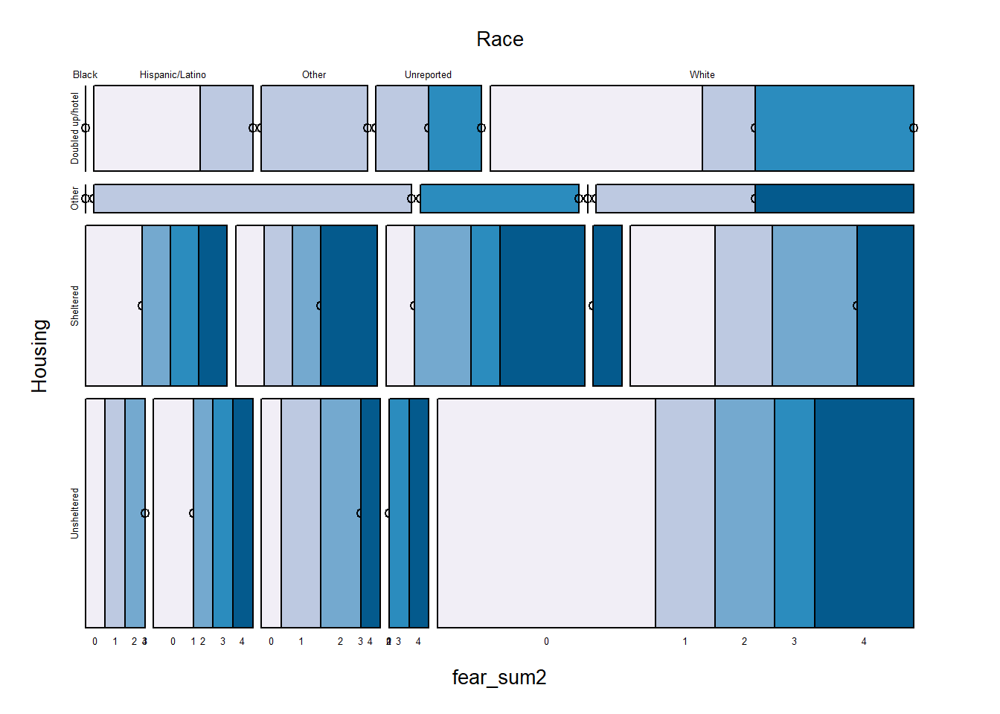
With this limited data, the boxplot presents a increase in COVID-19 protective score among people have been experiencing homelessness for a longer time. 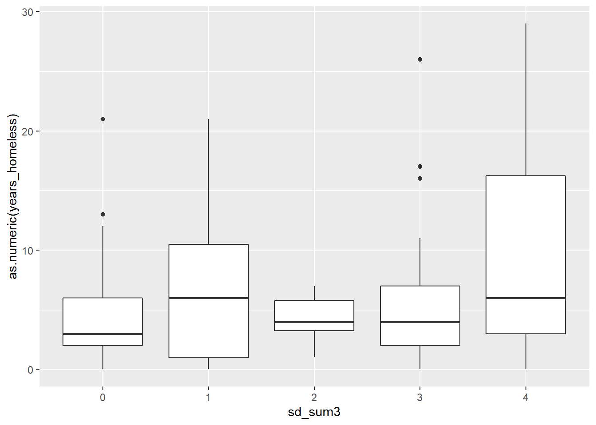
When the fear score increases, the hesitancy of taking vaccine decreases. We can also see a relatively positive relationship between fear score and COVID-19 protective score. People are more likely to follow the protective instructions and take action if their fear score is higher. 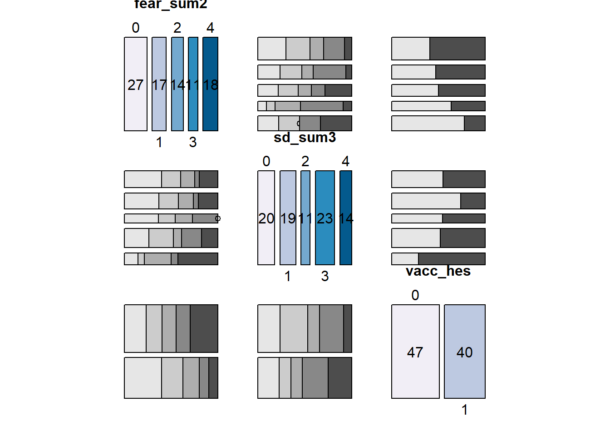
5.2.1 Analysis of Hesitancy of Vaccination among Homelessness based on Limited Response
From the bar plot below, the most popular reason of hesitating to have COVID-19 vaccine is the concern and fear of unpleasant vaccination side effects. People also cared about getting more information first before actually taking the dose and some of them refused to get any vaccine, not just COVID-19’s. 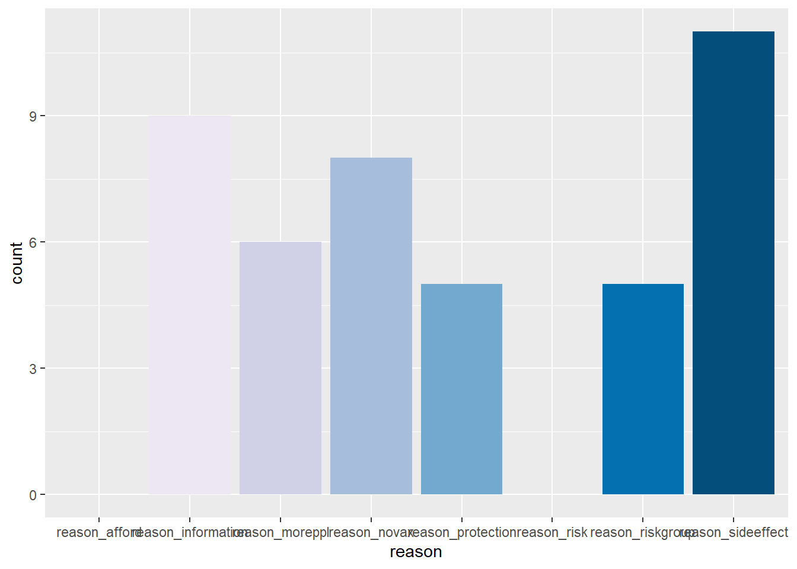
The data also contains the response of the question that if the vaccination is provided, whether people would take it. Depending on the plot, we can indicate that people experiencing homelessness who said “yes” to this question have shown no hesitance in taking vaccination, while those who answered “No” or preferred not to answer had such hesitation. 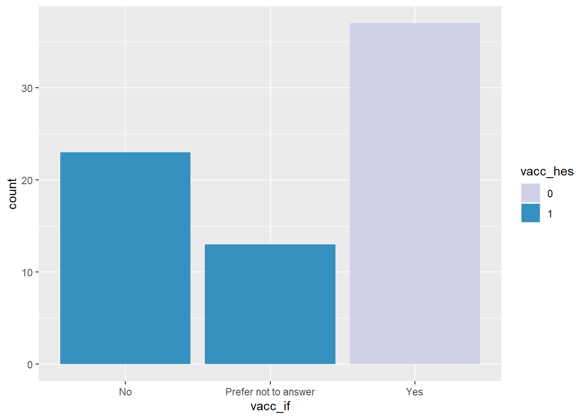